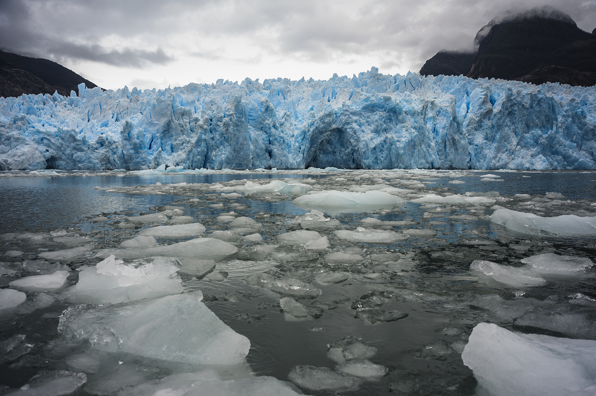
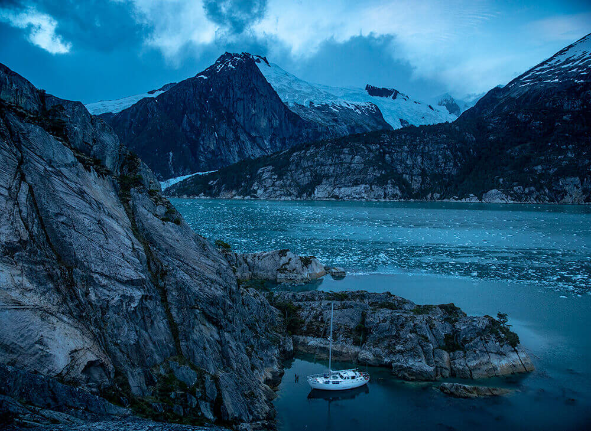

Parque Nacional Laguna San Rafael
El Parque Nacional Laguna San Rafael está ubicado en la Región de Aysen y su fundación data de 1959, se caracteriza por ser el más grande de esta región con una superficie de 17.420 km² y también por ser la tercera mayor reserva de hielos del mundo con 20.000 kms de hielo. En el parque se pueden hacer varias actividades como la navegación, montañismo, fotografía, pesca, excursión, disfrutar de la flora y fauna, con aves terrestres y marinas como albatros caja negra, pato huala, cisnes de cuello negro, lobos de un pelo, elefantes marinos entre otros. También en algunas ocasiones encontrarás desprendimiento de bloques de hielos de blanco azulado. El clima es húmedo y la media anual es de 5°C de temperatura. Solamente se puede acceder al parque de forma aérea y marítima.

Parque Nacional Alberto de Agostini
El Parque Nacional Alberto de Agostini está ubicado en Magallanes y la Antártica Chilena y su fundación data de 1965, es el tercer parque más grande de Chile con 14.600km², el parque posee más de 105 especies de fauna, con Elefantes Marinos en peligro de extinción, además de Focas Leopardo, Lobo Fino Austral, Ballenas, Delfines, Chungungos, Albatros, Cormoranes, Petreles y 49 especies de aves terrestres y marinas. En el parque hay muchos atractivos, tales son la Cordillera Darwin, Monte Darwin, Monte Sarmiento la belleza de esta montaña fue destacada por Julio Verne, Pico Francés donde se desprenden dos glaciares, también cuenta con varios glaciares. La temperatura media anual es de máximo 9°C y la mínima de 2°C. Solamente se puede acceder al parque de forma marítima que se encuentra a 80 millas naúticas al sudeste de Punta Arenas.

Parque Nacional Conguillío
El Parque Nacional Conguillío está ubicado en la Región de la Araucanía y su fundación data de 1987, cuenta con una superficie de 60.832 ha, donde se encontrará con diversidad de hermosos paisajes por la presencia del volcán Llaima y Sierra Nevada que afectaron a su alrededor y crearon paisajes alucinantes. La flora y fauna de este lugar es importante por su biodiversidad, se pueden encontrar Güiña, Degu, Quique, Puma, Pudu, Zorro Culpeo, Zorro Chilla, entre otros mamíferos nativos de esta zona, también su flora nativa de esta zona se encuentra la Araucaria, Ciprés de la Cordillera, Coihue, Lleuque, Liuto entre otros. La temperatura de esta zona es Templado-Cálido de menos de cuatro meses secos y Hielo por efecto de altura. Al parque se puede acceder de forma terrestre por tres sectores, Los Paraguas, Conguillío y Truful-Truful.